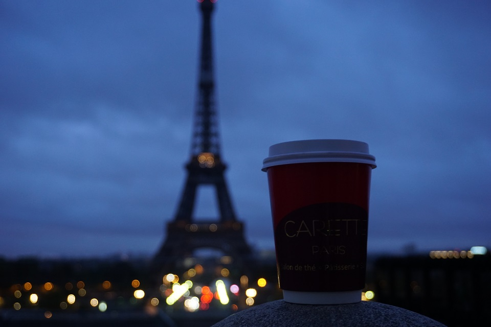
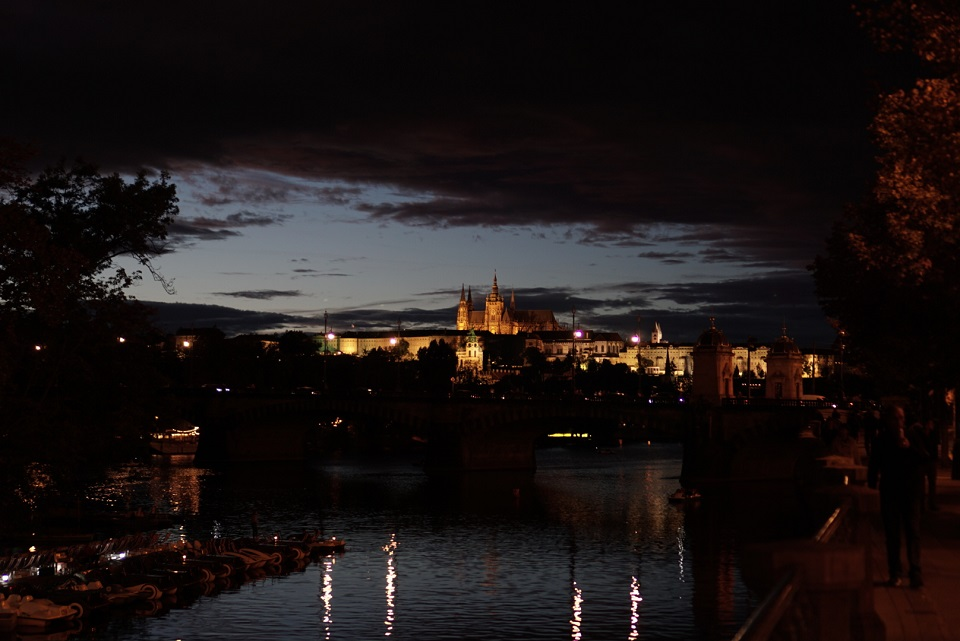
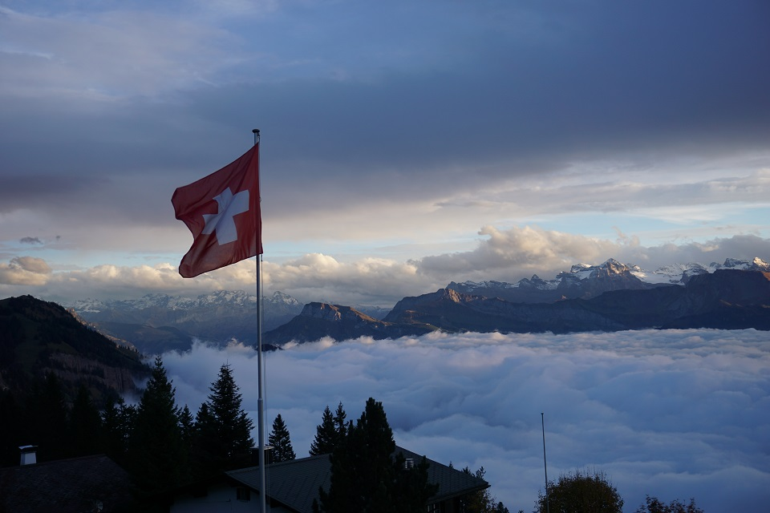
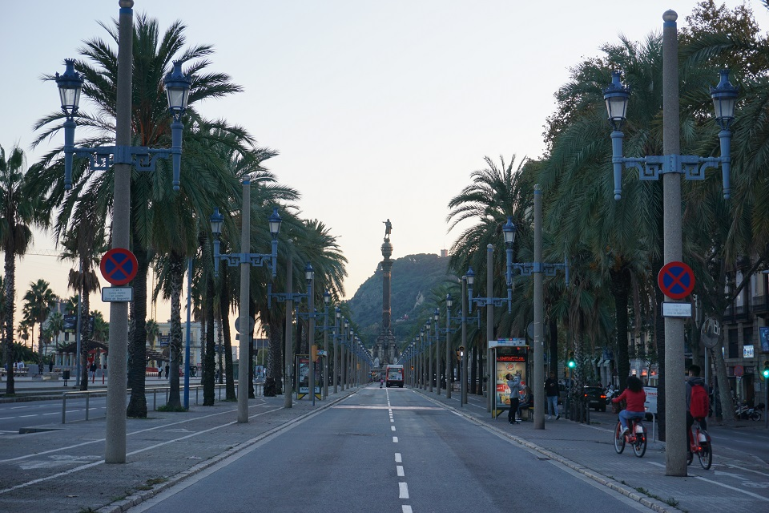
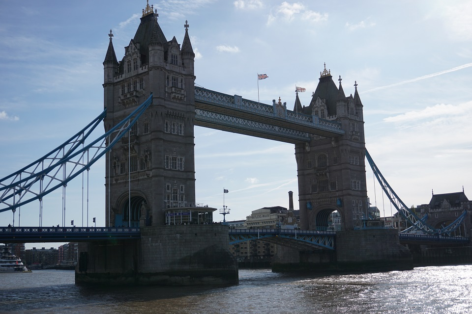

프랑스 - 파리 2019.09.10 ~ 2019.09.16
유럽 여행의 첫 번째 도시 프랑스 파리
패션과 미식, 예술과 낭만이 있는 세계 문화의 중심지라고 알려져있는 프랑스 파리는 나한테는 제일 기억에 남는 도시였다. 에펠탑뿐만 아니라 루브르, 오르세 미술관 등 여러 볼 것들이 많다.
여행객 모두가 파리는 낭만이 있는 도시라고 생각하고 가지만,
파리는 냄새나고 더럽고 소매치기가 세계에서 제일 많은 도시이다.
나에게는 유럽의 첫 여행지이고 여행동안 고생을 많이 한 장소라 그런지 기억에 제일 남는 도시인 것 같다.
독일 - 뮌헨 2019.09.16 ~ 2019.09.25

유럽 여행의 세 번째 도시 독일 뮌헨
깨끗한 거리, 깨끗한 시설, 다정한 사람들이 있는 나라이다.
프랑스 파리는 냄새가 나고 더러웠다면, 독일은 정 반대이다.
독일 사람들은 인간다운 생활을 지향하고, 환경 보호를 위해 노력하는 모습을 보인다.
거리에는 쓰레기하나 없으며 대중교통 시설 또한 서울과 비슷할 정도로 깨끗하다.
또한 독일은 맥주로도 유명한데, 매년 10월에 열리는 옥토버페스트에는
맥주를 좋아하는 사람들이 세계에서 모이는 곳이다. 아우구스티너, 뢰벤브로이, 파울라너 등
역사있고 맛있는 맥주들이 관광객을 반긴다.
체코 - 프라하 2019.09.30 ~ 2019.10.05

유럽 여행의 다섯 번째 도시 체코 프라하
카를 교, 코젤 다크, 필스너 우르쾰로 유명한 프라하이다.
사진 속 장소는 카를교와 프라하 성을 배경이다.
체코는 다른 유럽과 다르게 상대적으로 물가가 저렴하며 코젤 다크 생맥주 한잔에 2300원 정도이다.
(테라보다 쌈 ㅎㅎ)
중요) 아무나 알지 못하는 정보
체코에서는 9월 한달 조금 안돼게 갓 생산한 숙성되지 않은 와인 부르착을 맛볼 수 있다.
달짝지근한 와인인데 고급진 맛??이라 2L짜리 생수병에 담긴 부르착을 하루만에 두 통을 마셨다.
체코가면 꼭 먹어보길...!! 강추..!!
스위스 - 루체른 2019.10.21 ~ 2019.10.24

유럽여행 아홉 번째 도시 스위스의 루체른
사진 속의 장소는 루체른의 리기산으로 스위스 중부에 위치한 산으로 높이는 1,798m이다.
유럽 최초의 산악열차를 타고 정상에 올라갔을 때, 너무 추워서 오래 있지 못하였다.
스위스에서는 산 정상에 도착했을 때, 설산을 마주할 수 있는데 그 순간을 잊지 못한다.
기찻길을 따라 걸어 내려오면 서울에서의 미세먼지 공기와는 비교할 수 없는 공기를 들이 마쉴 수 있다.
스페인 - 바르셀로나 2019.10.24 ~ 2019.10.30

유럽여행 10번째 도시 스페인의 바르셀로나
바로 전 여행지였던 스위스는 완전 겨울이였지만 스페인 바르셀로나는
정 반대로 10월 말인데도 불구하고 반팔입고 다닐정도로 완전 더웠다.
스페인은 지중해를 끼고 있는 나라이기 때문에 해산물 가득한 먹거리가 많고,
특히 스페인의 대표적인 하몽과 상그리아의 맛은 잊을 수가 없다.
바르셀로나에서는 낮부터 밤까지 취해있던 것 같다.
영국 - 런던 2019.10.30 ~ 2019.11.05

유럽여행 마지막 도시 영국의 런던
킹스맨의 도시, 신사의 도시라고 불리는 런던은 우리나라와 비슷하다고 느꼈다.
서울과 비슷하게 강을 사이에 두고 고층 빌딩이 많다.